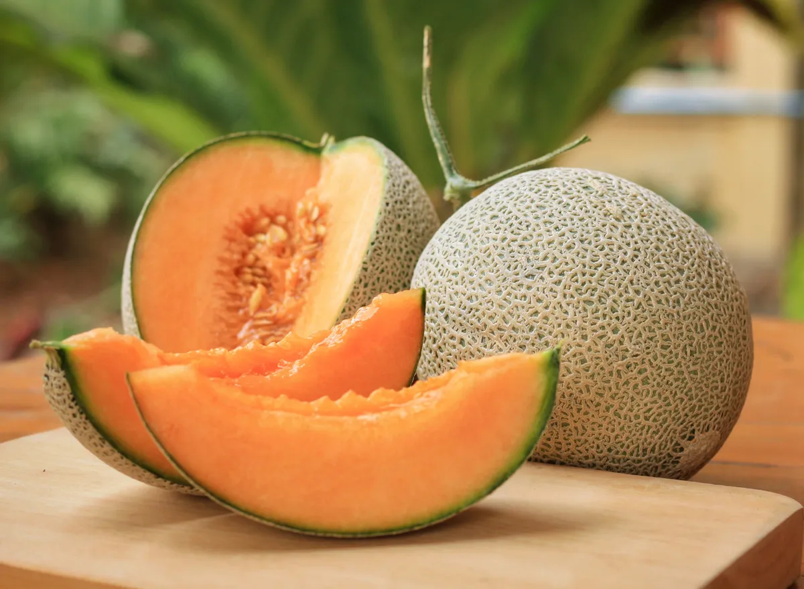
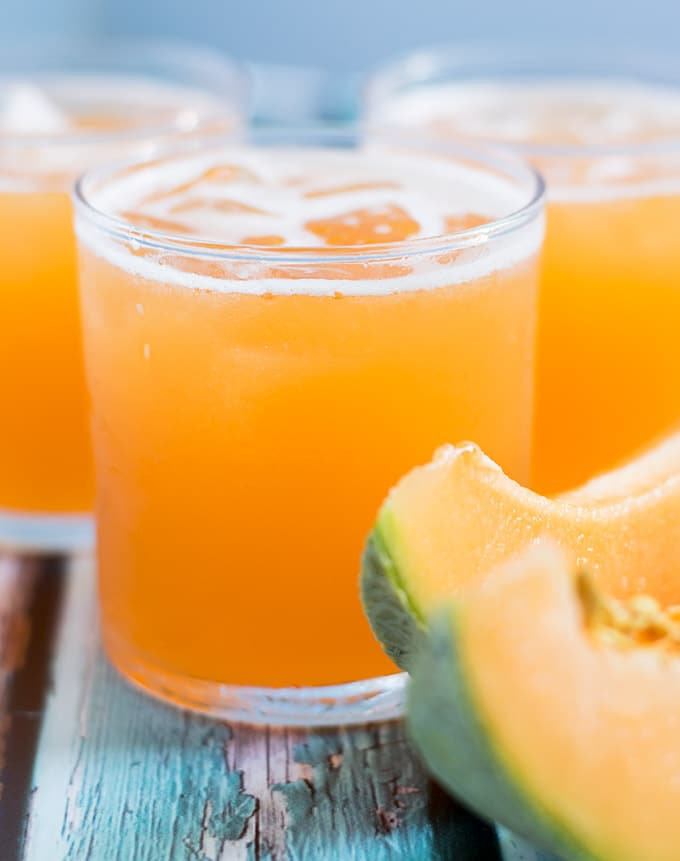

Sparkling Cantaloupe Agua Fresca

This refreshing agua fresca with cantaloupe and lime juice topped with club soda is perfect on a hot day.
Cook Time: 15 min
Servings: 8
Ingredients:
- 2 pounds fresh cantaloupe cubes (6 cups)
- 2 cups water
- 6 tablespoons freshly squeezed lime juice (from 2 limes)
- 3 tablespoons honey
- 1/4 teaspoon salt
- 2 cups club soda, chilled
- cantaloupe melon balls or cubes, for garnish
- lime zest twists, for garnish
Directions:

- Working in batches if needed, blend cantaloupe, water, lime juice, honey, and salt in a blender until smooth. Press through a sieve; discard solids. Add strained juice to a pitcher.

- Chill until ready to serve. Add club soda just before serving. Serve over ice, and garnish glasses with melon balls and lime zest twists.
Home